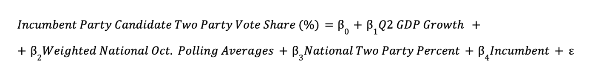
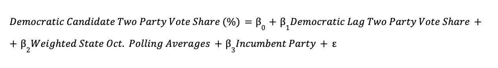

Introduction
This week, I present my final prediction models for the national two-party popular vote and the Electoral College for the 2024 presidential election. My final prediction models are multivariate ordinary least squares (OLS) regression models using national and state-level data from 1968-2020 to then predict for 2024. I predict that Vice President Kamala Harris will win the 2024 presidential election, earning 51.96% of the national popular vote and carrying the Electoral College with 319 electoral votes.
The National Two-Party Popular Vote Model
First, I created a multivariate OLS regression model to predict the national two-party popular vote.
Here is the equation for the national model. 
In this model, the dependent variable is the incumbent party candidate’s share of the national two-party popular vote (%). The incumbent party is the party of the sitting president during the presidential election year.
The independent variables consist of the following:
- Q2 GDP Quarterly Growth: the national GDP growth (%) for Quarter 2 of a presidential election year
- Weighted National October Polling Averages: the average of national October horse-race polls, sourced from FiveThirtyEight and weighted by weeks left before the election
- National Two-Party Percentage: the national two-party percentage of party affiliation, sourced from Gallup and Pew Research Center
- Incumbent Status: whether the incumbent party candidate is also the incumbent president (1) or not (0)
National Model Justification
For Q2 GDP growth, I draw on Achen and Bartels (2014), who examine the role of “economic voting” in predicting voter behavior in their book Democracy for Realists. They note that economic distress can be politically damaging to incumbents as voters attribute economic downturns to the incumbent and subsequently vote “by their pocketbooks.” Furthermore, Achen and Bartels note that voters have relatively short time horizons: they tend to focus on economic growth in a presidential election year, rather than evaluating the entirety of the incumbent’s time in office. Although their analysis mainly focuses on income growth, real disposable personal income (RDPI) growth was not statistically significant and reduced the R-squared values when I included it in previous versions of my prediction model. As such, I utilize GDP growth from Quarter 2 (Q2) of an election year in my model: Q2 is the period of April through June, which provides a stable but recent snapshot of the pre-election national economy.
For national October polling averages, I look to Gelman and King (1993), who found that the number of days before an election matters for poll accuracy. Their article discuss how early polls present “fairly miserable forecasts” of election outcomes, although polls eventually converge to actual electoral results “shortly before Election Day.” To address this finding, I include national polling averages on the general election for the month of October weighted by weeks left before the election; this adjustment accounts for the idea that polls taken closer to Election Day tend to be more predictive of voter behavior.
For national two-party percentage, I reference Kim and Zilinsky (2024). Among a mix of demographic variables (e.g. race, gender, age, education), they conclude that partisan identification is the strongest predictor of the national two-party vote share. I therefore include the national two-party percentages of party affiliation in my model.
For incumbent status, incumbent politicians are often understood to have a structural “advantage” over their challengers: they can harness the “bully pulpit” to command media attention and shape public opinion, get a head start on campaigning, and utilize the powers of their offices (e.g., control spending) to gain constituent favor. However, Brown (2014) finds that voters do not significantly respond to incumbency status when structural advantages — such as advertising, credit claiming and position-taking — are held constant. That being said, I still believe that it is important to account for incumbency in my model: I utilize a numeric variable that is equal to 1 if the incumbent party candidate is also the incumbent president and 0 if not.
National Model Regression Table
I train my model on data from 1968 to 2016, which covers 13 presidential elections. Notably, I exclude 2020, which is a significant economic outlier because of the unprecedented economic turmoil from the COVID-19 pandemic.
The regression table for my final national two-party popular vote predictive model follows.
| National Popular Vote Share for Incumbent Party Candidate | ||||
|---|---|---|---|---|
| Predictors | Estimates | std. Error | CI | p |
| (Intercept) | 21.77 | 5.19 | 9.81 – 33.74 | 0.003 |
| GDP growth quarterly | 0.50 | 0.14 | 0.18 – 0.82 | 0.007 |
| oct poll | 0.47 | 0.08 | 0.29 – 0.64 | <0.001 |
| two party percent | 0.12 | 0.06 | -0.02 – 0.26 | 0.093 |
| incumbent | 1.13 | 1.08 | -1.36 – 3.61 | 0.327 |
| Observations | 13 | |||
| R2 / R2 adjusted | 0.920 / 0.880 | |||
Interpretation of Coefficients
All coefficients are statistically significant except for two-party percent and incumbent at the 99% confidence level.
- Q2 GDP Quarterly Growth: For every percent increase in Q2 GDP growth, there is a 0.50% point increase in the incumbent party candidate’s national two-party popular vote share. This coefficient is statistically significant (p = 0.007), showing a positive relationship between GDP growth and popular vote share.
- Weighted National October Polling Averages: For every percent increase in the October polling average, there is a 0.47% point increase in the incumbent party candidate’s national two-party popular vote share. This coefficient is statistically significant (p < 0.001), which indicates that October polling averages are also a strong predictor of national popular vote share.
- National Two-Party Percentage: For every percent increase in the national two-party percent, there is a 0.12% point increase in the incumbent party candidate’s national two-party popular vote share. This coefficient is not statistically significant (p = 0.093) at this confidence interval.
- Incumbent Status: Holding other factors constant, being an incumbent president is associated with a 1.13% point increase in the incumbent party candidate’s national two-party popular vote share. This coefficient is not statistically significant (p = 0.327) at this confidence interval.
Although both two-party percentage and incumbent status are not statistically significant predictors in this model, they are often theoretically important to election outcomes as previously discussed. Including these variables helps reduce omitted variable bias and enhances the model’s R-squared value, reflecting a more comprehensive understanding of factors that potentially influence electoral results.
National Model Validation
In terms of in-sample error, an R-squared value of 0.92 means that 92% of the variation in national two-party popular vote share is accounted for by the model’s predictors. This suggests a strong correlation between the model’s variables and presidential election outcomes.
The adjusted R-squared of 0.88 corrects for the number of predictors in the model, ensuring that the fit is not overstated owing to unnecessary or insignificant variables. The small drop between R-squared and adjusted R-squared indicates that the model does not significantly suffer significantly from over-fitting, which means that the included variables are relevant and contribute to the model’s predictive power.
To evaluate out-of-sample fit, I conducted 1,000 iterations of cross-validation, each time randomly selecting half of the election years — or six elections — to serve as the test set. The model’s mean absolute out-of-sample residual across these runs is approximately 3.63, which indicates a strong predictive fit when considering that the national two-party vote share spans nearly 20 percentage points. In other words, the model can predict outcomes within a relatively close range of actual electoral results on average. The following histogram displays the distribution of out-of-sample errors for the national model with a red dashed line for the mean absolute out-of-sample error.

The errors appear slightly right-skewed, indicating the model occasionally underestimates the incumbent party candidate’s performance by a wider margin than it overestimates. This histogram shows a small number of outliers on the far right of the distribution, where the out-of-sample mean absolute errors exceed 5. These outliers indicate instances where the model made unusually large prediction errors, underestimating the incumbent party candidate’s performance relative to other cases.
However, the right skew in the error distribution is not necessarily a negative. Predictive models often reflect the unpredictable nature of elections, where certain factors may cause the incumbent party candidate to outperform expectations in specific years. Overall, the model performs relatively well, and these validity assessments demonstrate its robustness in forecasting electoral outcomes.
Predictions for 2024 National Two-Party Popular Vote
Using the national model, I predict the national two-party popular vote share for the incumbent party candidate — Vice President Harris — in the 2024 presidential election.
| Prediction | Lower Bound | Upper Bound |
|---|---|---|
| 51.96 | 47.45 | 56.47 |
The national model predicts that Vice President Harris will win 51.96% of the national two-party popular vote. This means that former President Donald Trump is expected to capture 48.04% of the national two-party popular vote.
The prediction intervals are calculated at the 95% confidence interval. At the lower bound, I predict that former President Trump will win 52.54% of the national two-party popular vote with Vice President Harris winning 47.46%. At the upper bound, I predict that Vice President Harris will win 56.47% of the national two-party popular vote with former President Trump winning 43.53%.
Finally, I summarize my prediction for the national two-party popular vote in the following visualization. The dashed black line indicates 50% of the national two-party popular vote.

The State-Level Popular Vote & Electoral College Model
Using a similar methodology to the national model, I also created a multivariate OLS regression model to predict the races of 13 selected states — informing a prediction for the Electoral College.
Here is the equation for the state model. 
In this model, the dependent variable is the Democratic party candidate’s share of the state-level popular vote (%).
The independent variables consist of the following:
- Democratic Candidate Lag Two-Party Vote Share: the state-level two-party vote share for the Democratic candidate from the previous presidential election
- Weighted State-Level October Polling Averages: the average of state-level October horse-race polls, sourced from FiveThirtyEight and weighted by weeks left before the election
- Incumbent Party Status: whether the Democratic candidate is also the incumbent party candidate (1) or not (0)
State Model Justification
I previously explained the inclusion of polling averages and incumbent status in my predictive models under the justification of the national model. Of note, however, is that the incumbency advantage is expressed here as incumbent party, rather than incumbent president. I wanted to explore a different measure of incumbency in my state-level model; incumbent politicians often perform well in elections, though this advantage does not necessarily extend to their parties. Only 4 incumbent presidents have lost re-election in the post-war era, while the incumbent party candidate has only prevailed in 9 out of the 19 last presidential elections.
Secondly, I add a coefficient to represent the Democratic candidate’s lag popular vote: with increasing political calcification, it is more likely that partisan support among voters will remain consistent from year to year as individuals vote in line with their party identities. Therefore, lagged popular vote from the prior election could potentially be a good predictor of election outcomes.
State Model Regression Table
I train my model on data from 2000 to 2020 to better reflect modern voter demographics, polling methodologies, and partisan alignments.
The regression table for my final state-level popular vote predictive model follows.
| Democrat's State-Level Popular Vote Share | ||||
|---|---|---|---|---|
| Predictors | Estimates | std. Error | CI | p |
| (Intercept) | -2.97 | 0.89 | -4.73 – -1.21 | 0.001 |
| lag pv2p | 0.45 | 0.04 | 0.38 – 0.53 | <0.001 |
| oct poll | 0.67 | 0.04 | 0.59 – 0.76 | <0.001 |
| incumbent party | -0.74 | 0.44 | -1.60 – 0.12 | 0.092 |
| Observations | 295 | |||
| R2 / R2 adjusted | 0.928 / 0.927 | |||
Interpretation of Coefficients
All coefficients except incumbent party status are statistically significant at the 99% confidence level.
- Democratic Candidate Lag Two-Party Vote Share: For every percent increase in the lagged two-party popular vote, there is a 0.45% point increase in the Democratic candidate’s state-level two-party popular vote share. This coefficient is statistically significant (p < 0.001), which indicates that lagged two-party popular vote is a strong predictor of state-level popular vote share.
- Weighted State-Level October Polling Averages: For every percent increase in the state-level October polling average, there is a 0.67% point increase in the Democratic candidate’s state-level two-party popular vote share. This coefficient is statistically significant (p < 0.001), which indicates that October polling averages are also a strong predictor of state-level popular vote share.
- Incumbent Party Status: Holding other factors constant, being a member of the incumbent party is associated with a 0.74% decrease in the Democratic candidate’s state-level two-party popular vote share. This coefficient is not statistically significant (p = 0.092) at this confidence interval.
State Model Validation
In terms of in-sample error, an R-squared value of approximately 0.93 means that 93% of the variation in state-level two-party popular vote share is accounted for by the model’s predictors. This suggests a strong correlation between the model’s variables and presidential election outcomes.
The adjusted R-squared value of 0.93 accounts for the number of predictors in the model. The minimal drop from the R-squared of 0.928 to the adjusted R-squared of 0.927 suggests the absence of significant over-fitting, further indicating that the selected predictors contribute meaningfully to explaining the variation in state-level two-party vote share for the Democratic candidate.
Likewise, I performed 1,000 iterations of cross-validation to evaluate the out-of-sample fit, randomly selecting half of the election years — or 3 elections — for the test set in each iteration. The model’s average absolute out-of-sample residual across these iterations is approximately 2.8, suggesting a strong predictive capability, especially considering that the state-level two-party vote share varies by more than 20 percentage points. This means that on average, the model is able to predict outcomes within a narrow range of actual electoral results. The following histogram displays the distribution of out-of-sample errors for the state model with a red dashed line for the mean absolute out-of-sample error.

The histogram of out-of-sample errors shows a distribution centered around a mean absolute error of approximately 2.8. The distribution is somewhat symmetric, with most errors falling between roughly 2 and 4. However, it is not perfectly bell-shaped; there is a noticeable concentration of errors around the center and a tapering off toward the edges. This pattern suggests that the model generally performs well, with relatively low variation in prediction errors, indicating a degree of reliability in forecasting election outcomes within a predictable range.
Predictions for Selected State Races
Using the state model, I predict the state-level two-party popular vote share for the Democratic party candidate — Vice President Harris — in the 2024 presidential election. Notably, I predict 13 state races: Arizona, Florida, Georgia, Michigan, Minnesota, Nevada, New Hampshire, New Mexico, North Carolina, Pennsylvania, Texas, Virginia, and Wisconsin. As mentioned in previous blogs, these states have all been designated as either “Lean/Likely Democrat,” “Lean/Likely Republican,” or “Toss Up” in the 2024 state-level predictions from Cook Political Report and Sabato’s Crystal Ball. I exclude NE-02 and ME-02 as data on the congressional district level was difficult to obtain. Assuming that states designated as “Safe/Solid Democrat” or “Safe/Solid Republican” by these expert models are confident calls for their respective parties, I look at these 13 states to try to predict their electoral votes.
The “Winner” column notes the winner of the state — more than 50% — based on the predicted two-party popular vote share for Vice President Harris.
| State | Prediction | Lower Bound | Upper Bound | Winner |
|---|---|---|---|---|
| Arizona | 51.21 | 45.88 | 56.53 | Harris |
| Florida | 49.39 | 44.07 | 54.72 | Trump |
| Georgia | 51.43 | 46.11 | 56.76 | Harris |
| Michigan | 52.49 | 47.17 | 57.82 | Harris |
| Minnesota | 54.90 | 49.57 | 60.23 | Harris |
| Nevada | 52.32 | 47.00 | 57.65 | Harris |
| New Hampshire | 55.63 | 50.30 | 60.95 | Harris |
| New Mexico | 55.83 | 50.50 | 61.16 | Harris |
| North Carolina | 51.21 | 45.89 | 56.53 | Harris |
| Pennsylvania | 52.16 | 46.84 | 57.49 | Harris |
| Texas | 48.15 | 42.83 | 53.48 | Trump |
| Virginia | 55.73 | 50.40 | 61.06 | Harris |
| Wisconsin | 52.21 | 46.89 | 57.53 | Harris |
The state model predicts that Vice President Harris will win Arizona, Georgia, Michigan, Minnesota, Nevada, New Hampshire, New Mexico, North Carolina, Pennsylvania, Virginia, and Wisconsin. Former President Trump is predicted to win Florida and Texas.
I created a visualization to present the confidence intervals for these state-level predictions of the Democrat’s popular vote share, sorted from greatest to smallest predicted vote share. The black dot is the predicted Democrat popular vote share in each state, with the blue dot (favoring Democrats) representing the upper bound and the red dot (favoring Republicans) representing the lower bound. The darker red dashed line marks 50% of the state-level popular vote.

As evident by this plot, many of these state races are contested and the lower bounds of the prediction intervals cross 50%. This demonstrates the close nature of the upcoming election, particularly in the 7 key battleground states.
I also create a plot to illustrate the Democratic candidate’s predicted win margin in each state with their confidence intervals, sorted by greatest to smallest predicted margin. Since I’m calculating the predicted win margin for the Democratic candidate, a negative win margin favors the Republican candidate. Again, the black dot is the predicted win margin, with the blue dot (favoring Democrats) representing the upper bound and the red dot (favoring Republicans) representing the lower bound of the win margin. The darker red dashed line marks 0%, which would suggest a tie in that state.

This visualization further illustrates the tight nature of the election, with most states showing narrow, single-digit margins in the predicted outcomes.
Predicted Electoral College Results for 2024 Presidential Election
Lastly, I designate the winners of the 37 remaining states according to the expert models previously cited. My result is the following predicted Electoral College map for the 2024 presidential election.

The state model predicts that Vice President Harris will win 319 electoral votes. This means that former President Donald Trump is expected to win 219 electoral votes.
I summarize my prediction for the Electoral College in the following visualization. The dashed black line indicates 270 electoral votes, which is the number of votes required to win the Electoral College.

Conclusion
After 8 weeks, this final model is a culmination of everything that I have learned so far in GOV 1347: Election Analytics. I’m grateful for our wonderful teaching team and guest speakers, as well as my incredible classmates for informing and inspiring much of this work. Overall, I’m very happy with my predictive models for the upcoming election! I accomplished a lot more than I originally thought I was capable of. I look forward to seeing how my predictions compare to the actual electoral results on Tuesday, November 5, as well as reflecting on my work after Election Day.